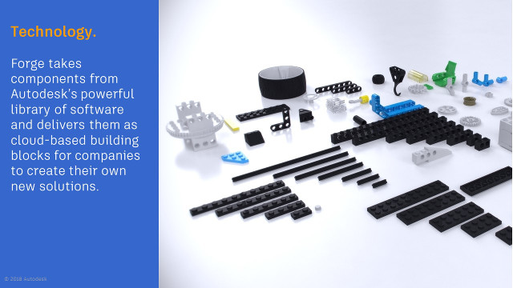
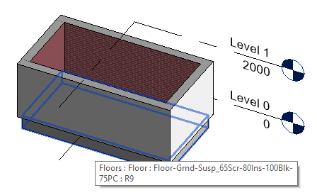

<p><head>
<meta http-equiv="Content-Type" content="text/html; charset=utf-8">
<link rel="stylesheet" type="text/css" href="bc.css">
<script src="https://cdn.rawgit.com/google/code-prettify/master/loader/run_prettify.js" type="text/javascript"></script>
</head></p>
<!---

- What is Forge?
  https://labs.blogs.com/its_alive_in_the_lab/2019/04/what-is-autodesk-forge.html
  Scott Sheppard shares a presentation by
  - Jim Quanci, Senior Director for the Autodesk Developer Network
  - Stephen Preston, Senior Manager of Business Development for Autodesk Forge
  - Chuck Mies, Sales Development Education Executive
  Summary
  The Era of Connection is upon us.
  - An interface is a point where two systems, subjects, organizations, etc. meet and interact.
  - Forge APIs are like LEGO bricks, but your feet don't hurt when you step on them.
  - Forge is more than just APIs.
  - Forge is an ecosystem.
  - It's about developers, developers, developers.
  - Autodesk developers and non-Autodesk developers use the same APIs.
  - Customization is commonplace.
  - Forge is an industrial strength solution.
  For details, read the full story in [It's Alive in the Lab](https://labs.blogs.com/its_alive_in_the_lab/2019/04/what-is-autodesk-forge.html).

- change level of floor
  https://forums.autodesk.com/t5/revit-api-forum/changing-the-level-id-and-offset-height-of-floors/m-p/8714247
    img/floor_set_level_0.png
    img/floor_set_level_1.png
  https://github.com/jeremytammik/the_building_coder_samples/releases/tag/2019.0.145.17
  https://github.com/jeremytammik/the_building_coder_samples/compare/2019.0.145.16...2019.0.145.17

- /a/doc/revit/tbc/git/a/zip/IPC_test_revit_plugin.zip
  [Revit 2019.1 add-in and CEFsharp library]
  https://forums.autodesk.com/t5/revit-api-forum/revit-2019-1-add-in-and-cefsharp-library/td-p/8205740
  Kim Sivonen
  [Revit Add-Ins using the CEFsharp Library]
  https://thebuildingcoder.typepad.com/blog/2018/08/revit-20191-cefsharp-forge-accelerator-in-rome.html#3
  15238813 [CefSharp files, to copy or not to copy?]
  https://forums.autodesk.com/t5/revit-api-forum/cefsharp-files-to-copy-or-not-to-copy/m-p/8709285

twitter:

Set floor level and use IPC for disentanglement in the #RevitAPI @AutodeskForge @AutodeskRevit #bim #DynamoBim #ForgeDevCon http://bit.ly/ipcdisentangle

Today, yet another introduction to Forge, a simple issue of setting the level of a floor element, and the much more complex one of gaining freedom and total independence via IPC
&ndash; What is Forge?
&ndash; Changing the level of a floor
&ndash; Entanglement can be hell
&ndash; CefSharp entanglement
&ndash; Disentanglement and independence via IPC
&ndash; Beer-ware license...

linkedin:

Set floor level and use IPC for disentanglement in the #RevitAPI @AutodeskForge @AutodeskRevit #bim #DynamoBim #ForgeDevCon http://bit.ly/ipcdisentangle

Today, yet another introduction to Forge, a simple issue of setting the level of a floor element, and the much more complex one of gaining freedom and total independence via IPC:

- What is Forge?
- Changing the level of a floor
- Entanglement can be hell
- CefSharp entanglement
- Disentanglement and independence via IPC
- Beer-ware license...

-->

<h3>Set Floor Level and Use IPC for Disentanglement</h3>
<p>Today, yet another introduction to Forge, a simple issue of setting the level of a floor element, and the much more complex one of gaining freedom and total independence via IPC:</p>
<ul>
<li><a href="#2">What is Forge?</a> </li>
<li><a href="#3">Changing the level of a floor</a> </li>
<li><a href="#4">Entanglement can be hell</a> </li>
<li><a href="#5">CefSharp entanglement</a> </li>
<li><a href="#6">Disentanglement and independence via IPC</a> </li>
<li><a href="#7">Beer-ware license</a> </li>
</ul>
<p><center>

</center></p>
<h4><a name="2"></a> What is Forge?</h4>
<p>Would you like to quickly understand
what <a href="https://forge.autodesk.com">Forge</a> is all about?</p>
<p>Well, on one hand, you can check out
the <a href="https://thebuildingcoder.typepad.com/blog/2019/03/-architecture-edit-and-continue-snooping-appearance-assets.html#2">high-level picture of Forge</a> shared
Scott Sheppard two weeks ago.</p>
<p>Now he added to that in a new article
on <a href="https://labs.blogs.com/its_alive_in_the_lab/2019/04/what-is-autodesk-forge.html">what Forge is</a>,
in which he summarises a presentation and shares the slide deck of three deeply knowledgeable colleagues:</p>
<ul>
<li>Jim Quanci, Senior Director for the Autodesk Developer Network</li>
<li>Stephen Preston, Senior Manager of Business Development for Autodesk Forge</li>
<li>Chuck Mies, Sales Development Education Executive</li>
</ul>
<p>Here is a quick summary of his summary:</p>
<ul>
<li>The era of connection is upon us</li>
<li>An interface is a point where two systems, subjects, organizations, etc meet and interact</li>
<li>Forge APIs are like LEGO bricks, but your feet don't hurt when you step on them</li>
<li>Forge is more than just APIs</li>
<li>Forge is an ecosystem</li>
<li>It's about developers, developers, developers</li>
<li>Autodesk developers and non-Autodesk developers use the same APIs</li>
<li>Customization is commonplace</li>
<li>Forge is an industrial strength solution</li>
</ul>
<p>For the details, read the full story in <a href="https://labs.blogs.com/its_alive_in_the_lab/2019/04/what-is-autodesk-forge.html">It's Alive in the Lab</a>.</p>
<p><center>

</center></p>
<h4><a name="3"></a> Changing the Level of a Floor</h4>
<p>Returning to the Revit API, one nice little discussion in
the <a href="http://forums.autodesk.com/t5/revit-api-forum/bd-p/160">Revit API forum</a>
addresses <a href="https://forums.autodesk.com/t5/revit-api-forum/changing-the-level-id-and-offset-height-of-floors/m-p/8714247">changing the <code>Level.Id</code> and offset height of floors</a>:</p>
<p><strong>Question:</strong> I have a Revit building project with 5-6 floors.
Some of the floors don't have a right level associated with them.
For example, the floor element of the 4th floor is linked to the 3rd level with a big offset height.
I want to have a well-organized Revit file to export a well-organized IFC file from it.
Therefore, I want to change the associated level (<code>level.ID</code>) and height offset of some of the floor elements.
As <code>level.Id</code> is not a property providing <code>get</code> and <code>set</code> accessors, I have no idea how to do it.
Does anyone here have experience?</p>
<p><strong>Answer by <a href="https://forums.autodesk.com/t5/user/viewprofilepage/user-id/2083518">Fair59</a>:</strong></p>
<p>You can set the built-in parameters <code>LEVEL_PARAM</code> and <code>FLOOR_HEIGHTABOVELEVEL_PARAM</code> like this:</p>
<pre class="code">
&nbsp;&nbsp;<span style="color:#2b91af;">Parameter</span>&nbsp;p&nbsp;=&nbsp;floor.get_Parameter(
&nbsp;&nbsp;&nbsp;&nbsp;<span style="color:#2b91af;">BuiltInParameter</span>.LEVEL_PARAM&nbsp;);

&nbsp;&nbsp;<span style="color:#2b91af;">Parameter</span>&nbsp;p1&nbsp;=&nbsp;floor.get_Parameter(
&nbsp;&nbsp;&nbsp;&nbsp;<span style="color:#2b91af;">BuiltInParameter</span>.FLOOR_HEIGHTABOVELEVEL_PARAM&nbsp;);

&nbsp;&nbsp;<span style="color:blue;">using</span>(&nbsp;<span style="color:#2b91af;">Transaction</span>&nbsp;tx&nbsp;=&nbsp;<span style="color:blue;">new</span>&nbsp;<span style="color:#2b91af;">Transaction</span>(&nbsp;doc&nbsp;)&nbsp;)
&nbsp;&nbsp;{
&nbsp;&nbsp;&nbsp;&nbsp;tx.Start(&nbsp;<span style="color:#a31515;">&quot;Set&nbsp;Floor&nbsp;Level&quot;</span>&nbsp;);
&nbsp;&nbsp;&nbsp;&nbsp;p.Set(&nbsp;level.Id&nbsp;);&nbsp;<span style="color:green;">//&nbsp;set&nbsp;new&nbsp;level&nbsp;Id</span>
&nbsp;&nbsp;&nbsp;&nbsp;p1.Set(&nbsp;2&nbsp;);&nbsp;<span style="color:green;">//&nbsp;set&nbsp;new&nbsp;offset&nbsp;from&nbsp;level</span>
&nbsp;&nbsp;&nbsp;&nbsp;tx.Commit();
&nbsp;&nbsp;}
</pre>

<p>Jeremy added a framework around this code snippet to pick the first (or only) floor in a sample model and the first level that differs from its current level to test it.</p>
<p>Here is a really minimal model before running the test external command:</p>
<p><center>

</center></p>
<p>Model after running add-in:</p>
<p><center>

</center></p>
<p>Saved for posterity in the method <code>SetFloorLevelAndOffset</code> in
the <a href="https://github.com/jeremytammik/the_building_coder_samples/blob/master/BuildingCoder/BuildingCoder/CmdEditFloor.cs">module CmdEditFloor.cs</a>
of <a href="https://github.com/jeremytammik/the_building_coder_samples">The Building Coder samples</a>
<a href="https://github.com/jeremytammik/the_building_coder_samples/releases/tag/2019.0.145.17">release 2019.0.145.17</a>, cf.
the <a href="https://github.com/jeremytammik/the_building_coder_samples/compare/2019.0.145.16...2019.0.145.17">diff from the previous release</a>.</p>
<h4><a name="4"></a> Entanglement can be Hell</h4>
<p>Now for the main topic, an important decoupling technique that you should be aware of and have ready for use in your toolkit in case of need.</p>
<p>Proem:</p>
<p>Sometimes, things get messed up due to entanglement.</p>
<p>One dreadful and common example that we've presumably all run into at one time or another is <a href="https://en.wikipedia.org/wiki/DLL_Hell">DLL hell</a>.</p>
<p>Disentanglement helps.</p>
<p>Making components as independent of each other as possible.</p>
<p>Way back then, that was actually one of the main motivations for <a href="https://en.wikipedia.org/wiki/Object-oriented_programming">object-oriented programming</a>.</p>
<p>Every Revit add-in is pretty heavily entangled with Revit itself, since it is loaded into the same process, and, worse still, the one and only <a href="https://en.wikipedia.org/wiki/Application_domain">.NET AppDomain</a> it provides.</p>
<p>This can cause problems for people trying to make use of certain other third-party components, especially if their add-in and Revit disagree on the exact version and other component details.</p>
<h4><a name="5"></a> CefSharp Entanglement</h4>
<p>This exact problem occurred
with <a href="https://forums.autodesk.com/t5/revit-api-forum/revit-2019-1-add-in-and-cefsharp-library/td-p/8205740">Revit 2019.1 and the CefSharp library</a>.</p>
<p>In that discussion, Autodesk points out that:</p>
<blockquote>
<p>Revit 2019.1 and other Autodesk add-ins use the CEFsharp library for several features.
Some 3rd party add-ins also use this library.
Unfortunately, simultaneous use of different versions of the library leads to instability issues.
In order to avoid version conflicts, we make it clear that Revit uses CEFsharp version 57.0.0.
In addition, Revit 2019.1 forcibly loads a version of CEFsharp prior to add-in initialization.
This means that add-ins that load a different version of the CEFsharp library may not function.
We recommend realigning add-ins to use the version provided by and loaded by Revit. </p>
</blockquote>
<p>We discussed this issue
of <a href="https://thebuildingcoder.typepad.com/blog/2018/08/revit-20191-cefsharp-forge-accelerator-in-rome.html#3">Revit add-ins using the CEFsharp library</a> here
last year.</p>
<h4><a name="6"></a> Disentanglement and Independence via IPC</h4>
<p>Later, <a href="https://www.linkedin.com/in/kim-sivonen-0594aa2">Kim Sivonen</a>, partner at <a href="https://www.prodlib.com">ProdLib Oy</a>,
very kindly shared a much more radical and effective solution to the problem, showing how to completely disentangle a Revit add-in or some part of the functionality it relies on from the main Revit process
using <a href="https://en.wikipedia.org/wiki/Inter-process_communication">IPC, inter-process communication</a>.</p>
<p>In his own words:</p>
<p>We chose to study the possibility of running CEF in another process. After some headache, it actually turned out to be a decent alternative.</p>
<p>I attached a sample solution source code if someone is interested:</p>
<ul>
<li><a href="zip/IPC_test_revit_plugin.zip">IPC_test_revit_plugin.zip</a></li>
</ul>
<p>The solution consists of two projects; one Revit plugin and one Forms application. All CEF-specific is isolated in the Forms application, which is launched from the Revit plugin as an own process. The code was written very quickly just to prove that the functionality can be done, so please try to tolerate the sloppy code. There's probably many ways how the functionality can fail in different situations, but I believe everything can be handled.</p>
<p>Some comments:</p>
<ul>
<li>There's only a minimal amount of code and the technology can be used also for plugins on other platforms. </li>
<li>Forms form/window was used in the browser window, but the same technology can be used for WPF.</li>
<li>A few Windows API calls are used to handle Window behaviour and messaging.</li>
<li>The sample uses Window Messages as the IPC technology. The actual data between the Revit plugin and the browser window was done using <code>WM_COPYDATA</code> of the Windows API <code>SendMessage</code> call. The two apps exchange their window handles in the start, which enables sending the messages.</li>
<li>One of the most important things to make the solution work was to make Revit behave as the owner of the window in the other process. This functionality is provided by the <code>SetWindowLongPtr-method</code> in <code>user32.dll</code>. Setting the owner makes Windows handle some of the Window operations automatically: the window stays always on top of the owner window, minimizes with it, etc.</li>
</ul>
<p>Please note that this software is BEER-WARE. <a href="#7">Description of the license below</a>.</p>
<p>Kim Sivonen, ProdLib Oy</p>
<h4><a name="7"></a> Beer-Ware License</h4>
<pre>
/*
* ----------------------------------------------------------------------------
* "THE BEER-WARE LICENSE" (Revision 42):
* <phk@FreeBSD.ORG> wrote this file. As long as you retain this notice you
* can do whatever you want with this stuff. If we meet some day, and you think
* this stuff is worth it, you can buy me a beer in return. Poul-Henning Kamp
* ----------------------------------------------------------------------------
*/
</pre>

<p>Many thanks to Kim for researching, implementing and sharing this powerful solution!</p>
<p>It may come in handy in many other entangled situations as well.</p>
<p>For instance, try IPC if you ever run into any kind of relationship problem.</p>